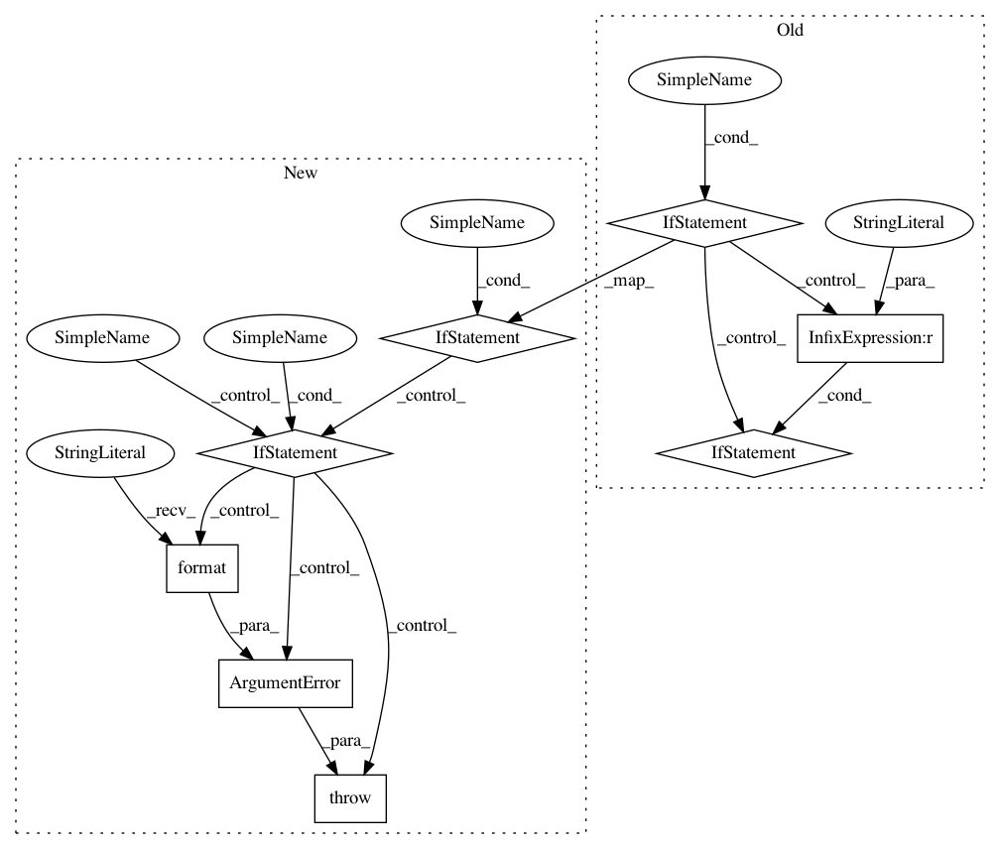

edf2e0176a83f04f6c781d67e8f1a0bb800305f1,sos/utils.py,,sos_handle_parameter_,#Any#Any#,1086
Before Change
NOTE: parmeters will not be handled if it is already defined in
the environment. This makes the parameters variable.
"""
if key in env.sos_dict:
if key in env.sos_dict._readonly_vars:
raise ValueError("Variable {} is readonly and cannot be defined as a parameter".format(key))
elif key in env.sos_dict["sos_symbols_"]:
env.logger.warning("Parameter {} overrides a SoS function.".format(key))
elif env.run_mode != "interactive":
// the variable should exist if it has been processed... otherwise it should be
// a bug in sos (e.g. reset dictionary without resetting parameter_vars.
return env.sos_dict[key]
env.parameter_vars.add(key)
if not env.sos_dict["__args__"]:
if isinstance(defvalue, type):
raise ArgumentError("Argument {} of type {} is required".format(key, defvalue))
After Change
raise ArgumentError("Argument {} of type {} is required".format(key, defvalue))
return defvalue
// if the parameter is passed from action sos_run
if isinstance(env.sos_dict["__args__"], dict):
if key in env.sos_dict["__args__"]:
return env.sos_dict["__args__"][key]
elif isinstance(defvalue, type):
raise ArgumentError("Argument {} of type {} is required".format(key, defvalue))
else:
return defvalue
//
parser = argparse.ArgumentParser()
// thre is a possibility that users specify --cut-off instead of --cut_off for parameter
// cut_off. It owuld be nice to allow both.
//
In pattern: SUPERPATTERN
Frequency: 3
Non-data size: 8
Instances
Project Name: vatlab/SoS
Commit Name: edf2e0176a83f04f6c781d67e8f1a0bb800305f1
Time: 2017-01-04
Author: ben.bog@gmail.com
File Name: sos/utils.py
Class Name:
Method Name: sos_handle_parameter_
Project Name: pantsbuild/pants
Commit Name: 27352341435fb0006c156c25a9a947ec9f7db972
Time: 2019-01-31
Author: ericarellano@me.com
File Name: src/python/pants/releases/packages.py
Class Name:
Method Name:
Project Name: vatlab/SoS
Commit Name: b8ca51fbbc992c8ae184b3dc6c9f90e9cb3a01f5
Time: 2017-01-04
Author: ben.bog@gmail.com
File Name: sos/utils.py
Class Name:
Method Name: sos_handle_parameter_